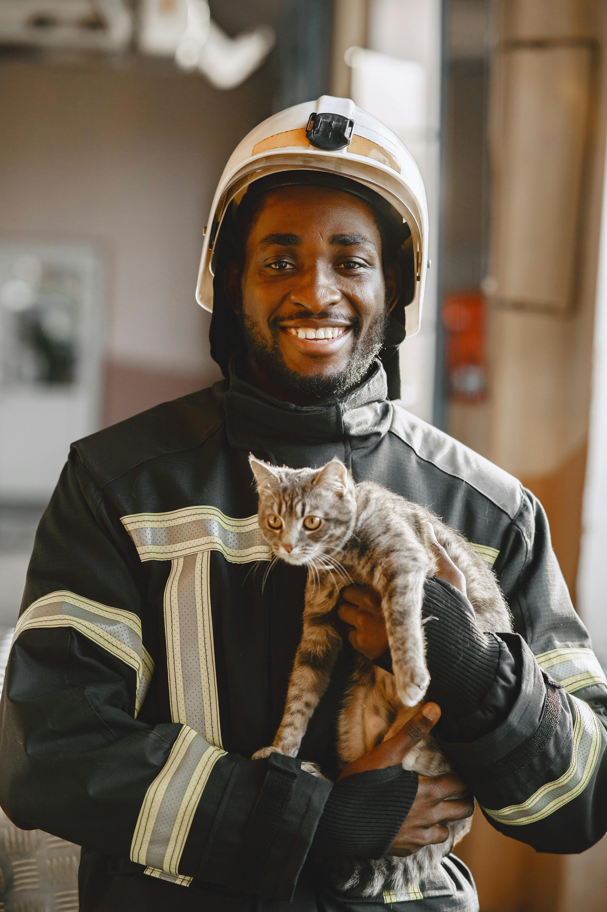

The Boy Who Took Over
5 year old Noah Lott found his stepfather, Ben Over, CEO of Next Dream Tech, fast asleep at his home office desk in the middle of the workday. In an hour and a half, he developed an app worth 1.4 million dollars! Thanks to Noah Lott, the world's youngest self-made millionaire, there have been thousands of happy customers. In an interview, his mother, Lee Ning Over, stated that she knew her son was bright, but had no idea he was this level of genius!
Cat Saves Firefighter
In his first week as a firefighter, 21-year-old Julian 'Frankenstein' Gerrity was chased up a tree by a stray dog. Luckily, Scuba Steve, the neighborhood cat, came to the rescue and chased the dog away so that Frankenstein could safely come down from the tree and resume his shift at the fire station. Scuba Steve is now an honorary firefighter friend with his own perch in the firehouse, where he can keep a bird's-eye watch over the neighborhood.